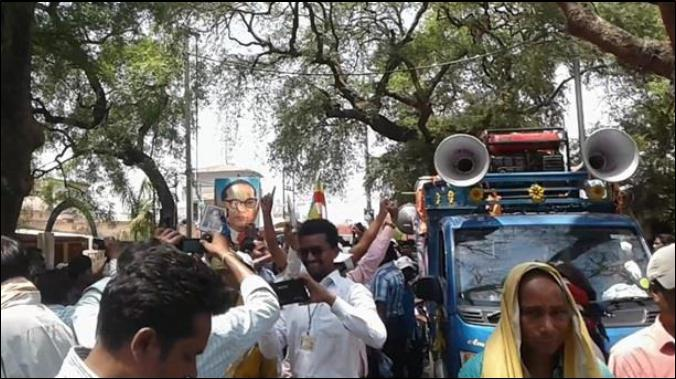

32
Celebration of Ambedkar's 125
th
Jayanti, a procession to all villages of Kalahandi
. Therefore, there is an internal problem of unity within SC/ST/OBC
communities on the one hand and brahminism as an external problem
to the entire SC/ST/OBC communities. This problem needs to be dealt
with by Ambedkarites in Kalahandi. That is what one can see in the
recent celebration of Ambedkar Jayanti in Kalahandi where all these
communities participated. I would say this is an initiation to overcome
this problem. This is what was done by Ambedkar (through
Annihilation of Caste) and Kanshiram (Jati Todo, Samaj Jodo).
Ambedkarism as an ideology will help people come together and
annihilate the caste system and gender discrimination. Hence, the first
task of Ambedkarite groups anywhere is to express their condition in
education, society, economics, politics, and religion and then present
the ideologies and philosophies to transcend those conditions. That is
why there is a need to come together for their emancipation from
brahminism.
In the recent celebrations, many people were part of this but when
leaders were addressing the masses they should not have been saying or
claiming that they are from "Dombo Samaj," "Adivasi Samaj," "OBC